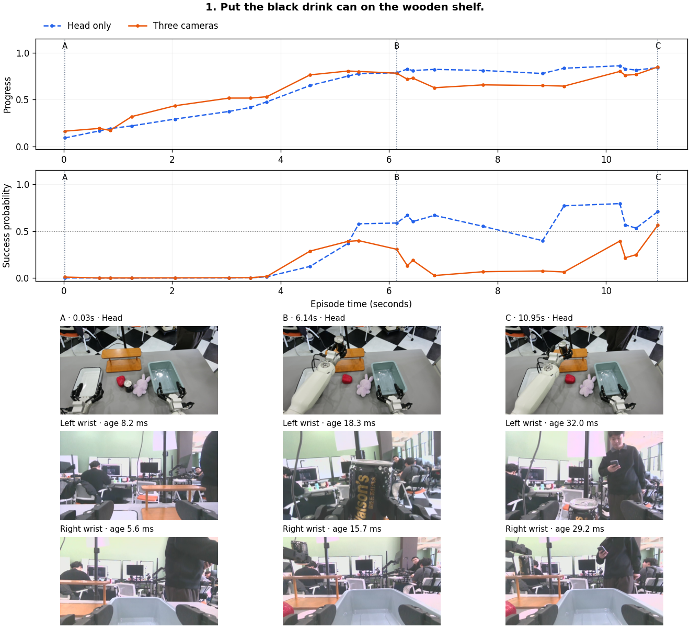
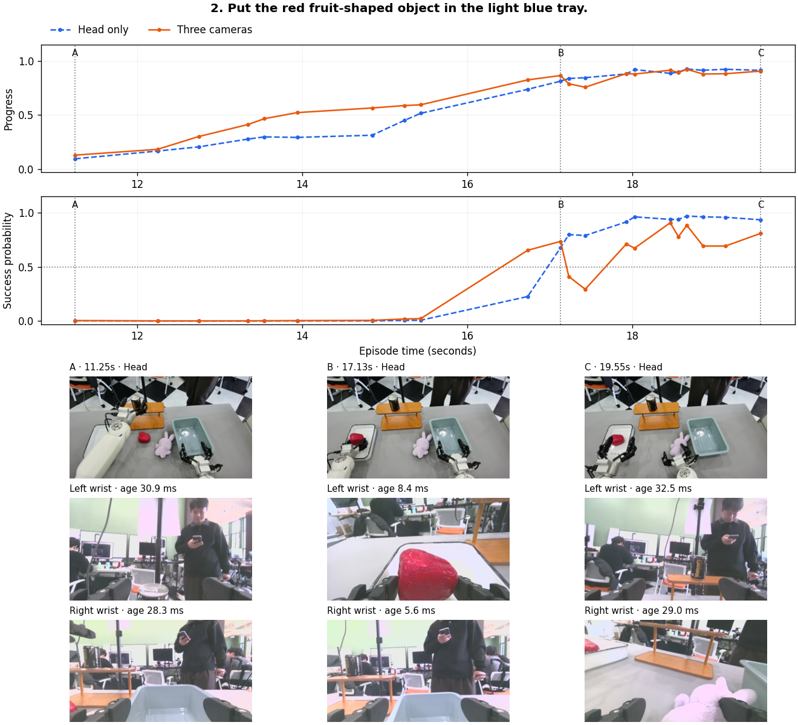
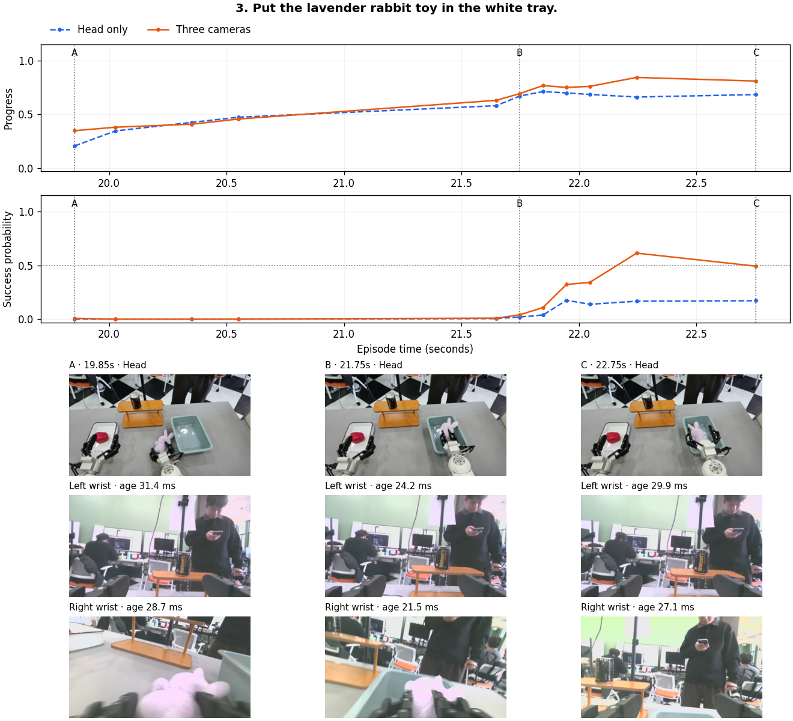

Preserved head-only reports · Input provenance · Paired scores
Same 457 selected times, 33 instruction segments, checkpoint, prompts, and up-to-eight-step histories. Three-camera input tiles head | left wrist | right wrist horizontally, each at 427×240 pixels (combined 1281×240 before Qwen processing). Camera frames are the latest available at or before the head timestamp, verified against raw data. This changes both visual information and input area/layout. Score differences do not establish better accuracy; human success labels are unavailable.
54 frames; mean absolute change: progress 0.078, success 0.167; 14 frames switch sides of the 0.5 success threshold.
22 frames · Final progress: head 0.840 → three 0.847; final success: head 0.707 → three 0.562. Threshold flips: 10.

Source annotation review notes: Task boundary: confirm release and next target in the original head/wrist images.
21 frames · Final progress: head 0.911 → three 0.905; final success: head 0.934 → three 0.809. Threshold flips: 3.

Source annotation review notes: Task boundary: confirm release and next target in the original head/wrist images.; The red fruit is in the white tray, contrary to the configured fruit-to-blue rule. Corrective transfer remains unfinished.
11 frames · Final progress: head 0.683 → three 0.809; final success: head 0.172 → three 0.492. Threshold flips: 1.

Source annotation review notes: Task boundary: confirm release and next target in the original head/wrist images.; The red fruit is in the white tray, contrary to the configured fruit-to-blue rule. Corrective transfer remains unfinished.; The rabbit is in the light blue tray, contrary to the configured toys-to-white rule. Move it to the white tray.